AI Academy · Level 4 · Grade 9 · Week 20 · Student lesson
Mean, Median, and Baselines
Learn to understand, design, build, test and explain AI systems responsibly.
Project: Responsible Plant Classifier
Before you start
Week 4: mean divides a sum by the count; median is the middle sorted value.
Plan time to read, investigate and explain. Keep predictions separate from observations.
Student lesson · 1 of 18
Your mission
Start with the target: Fit mean and median constant baselines on training targets. Try the recall before opening notes.
Your learning target
I can fit mean and median constant baselines on training targets.
I can compare constant predictions on separate records.
I can keep fitted constants independent of evaluation answers.
Remember before reading
Close your notes first. A rough first answer helps us choose the right starting point; it is not a score for your ability.
Without opening the old lesson, explain one key idea from Regression and Residuals. Give an example and a mistake that the idea helps you avoid.
Without opening the old lesson, explain one key idea from Precision and Recall. Give an example and a mistake that the idea helps you avoid.
Without opening the old lesson, explain one key idea from Scores and Calibration Intuition. Give an example and a mistake that the idea helps you avoid.
After trying, check the relevant lesson or ask your teacher. Change the part of your explanation that the evidence shows was wrong.
Mean and median are transparent regression baselines; outliers affect them differently.
Your target
LEARNING TARGET For training targets [1,3,11], compute mean and median constant baselines. Compare total absolute training error for each. Where must final performance be measured?
Builder name and experiment date:
Readiness for the connected explanation
Why can signed residuals hide error size?
This week’s end goal
By the end, I can explain mean, median, and baselines using a traced example and a stated limitation.
Student lesson · 2 of 18
Notice the evidence
Investigate the supplied Mean, Median, and Baselines case. Separate observations, given facts and assumptions before choosing an explanation.
PICTURE ENTRY
Notice → Predict → Explain
Begin with visible evidence; do not explain more than the picture and information support.
Start with this puzzle
MYSTERY The team must use mean, median, and baselines to solve a model-building problem. What information do they have? What important evidence is still missing?
Name three visible details without interpreting them.
Predict the data, model, or evaluation decision being made.
Identify one hidden assumption that could change the result.
State what evidence would confirm or reject your prediction.
My prediction and supporting evidence:
A closer explanation
Before a complex regression model, fit a simple constant predictor. A mean baseline uses the training average. A median baseline uses the middle training target.
They ignore features but provide a comparison that is easy to reproduce. Evaluation targets must not determine the constants.
Use fictional classroom data throughout this investigation. Keep the task, units, reference labels and data split visible as you reason.
Earlier weeks supplied the model-building process; this week examines constant prediction baselines.
Student lesson · 3 of 18
See how it works
Follow the mechanism for Mean, Median, and Baselines. Connect each labelled input, deciding step and result.
ML MECHANISM
Input → Model → Evidence
Trace the information, fitted behavior, and evaluation proof separately.
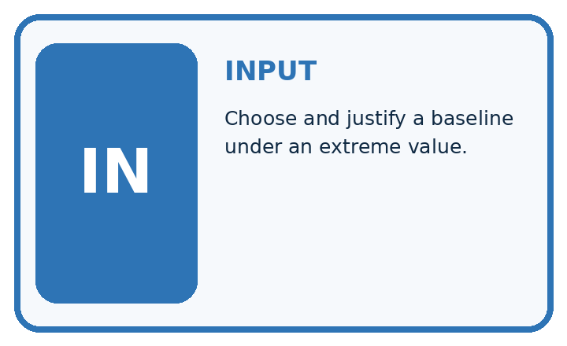
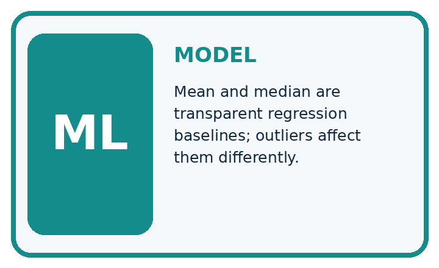
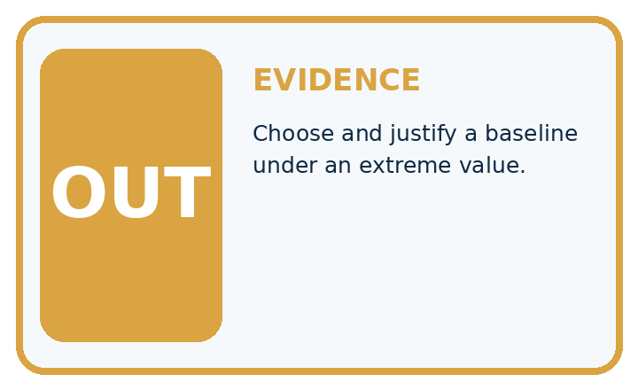
Question to explain
QUESTION Choose and justify a baseline under an extreme value.
MODEL IDEA Mean and median are transparent regression baselines; outliers affect them differently.
PROOF NEEDED Use an unseen case, visible calculation, error analysis, and a stated limitation.
How the mechanism works
UNDER THE HOOD Heights are 10, 11, 12, 13, and 54 cm. Mean = 100 ÷ 5 = 20 cm.
Draw a fresh data → model → prediction → evaluation trace:
A closer explanation
Training targets [2, 4, 6, 12] have mean 24/4=6 and median (4+6)/2=5. On separate targets [4, 8], the mean baseline predicts [6, 6] with absolute errors [2, 2], averaging 2.
The median baseline predicts [5, 5] with errors [1, 3], also averaging 2.
from statistics import mean, median
training = [2, 4, 6, 12]
validation = [4, 8]
for name, value in [("mean", mean(training)),
("median", median(training))]:
mae = mean(abs(y - value) for y in validation)
print(name, value, mae)
# Both validation MAEs are 2; constants differ.Trace the calculation on paper before running this optional Python check. Use the stated fictional inputs and compare intermediate values. The code checks this example; your independent workbook case uses different evidence.
Connect the picture and the explanation
Point to the input, the deciding step and the result in this week’s visual. Explain the same step in ordinary words. A picture helps when you can say what each part represents.
Student lesson · 4 of 18
Compare the cases
Compare the supplied cases for Mean, Median, and Baselines. Identify the detail that changes the conclusion.
EVALUATION DESIGN
Four Tests, Four Kinds of Evidence
A system is not understood until it survives more than one comfortable example.


NORMAL Expected data and expected behavior.
Keep this boundary clear
BOUNDARY Value close to a threshold, ambiguous label, or uncertain prediction.
MISSING Necessary field, label, source, or measurement is unavailable.
SHIFTED New lighting, species, device, subgroup, or time condition.
RELEASE RULE Passing one case never proves generalization. Predefine expected behavior for all four categories.
Which case most threatens today's claim, and why?
Change one thing in the pictured case
Change one thing
Change: Replace training 20 with 8 while keeping evaluation unchanged.
Predicted result
Prediction: Both fitted constants become5 cm and both evaluation MAEs remain3 cm.
Why the result follows
Reason: Mean is now20/4=5; median stays5. The earlier training outlier affected the mean.
Student lesson · 5 of 18
Words that unlock the idea
Use the vocabulary of Mean, Median, and Baselines to explain a concrete decision, rather than only memorising definitions.
VOCABULARY
Words You Can Calculate and Defend
A definition matters when it lets you interpret a new dataset, model, or result.
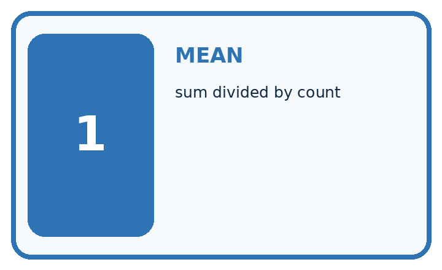
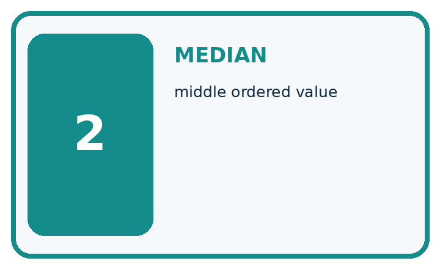
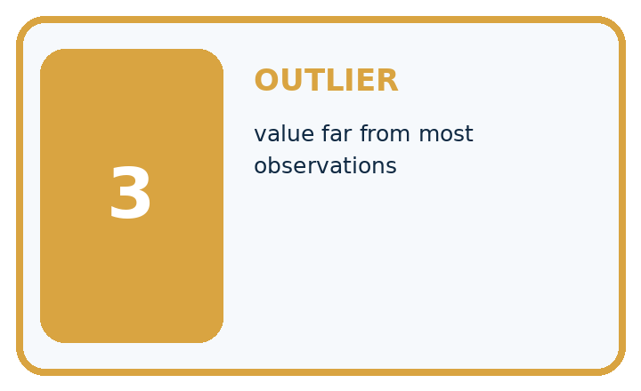
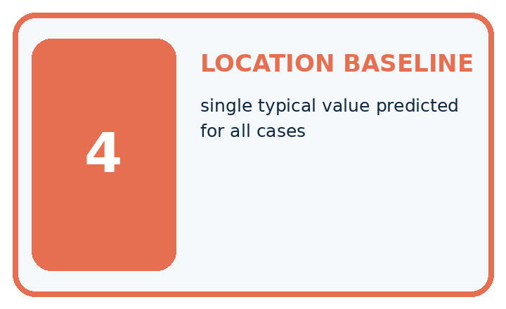
| Term | Precise meaning | My ML example |
|---|---|---|
| mean | sum divided by count | |
| median | middle ordered value | |
| outlier | value far from most observations | |
| location baseline | single typical value predicted for all cases |
MISCONCEPTION TO REPAIR The mean is always the fairest and most scientific summary.
Repair the claim using a definition, calculation, or test record:
Words used in the closer explanation
| Word | Meaning |
|---|---|
| Constant baseline | One fixed prediction for every query |
| Training mean | Sum of training targets divided by their count |
| Training median | Middle value of sorted training targets |
| Absolute error | Magnitude of observed minus predicted |
Student lesson · 6 of 18
Follow a worked example
Follow the worked trace for Mean, Median, and Baselines, predict a step, then compare with its explanation.
WORKED EVIDENCE
Reason Step by Step
Predict first. Then check each step. A correct answer without visible evidence cannot be audited.
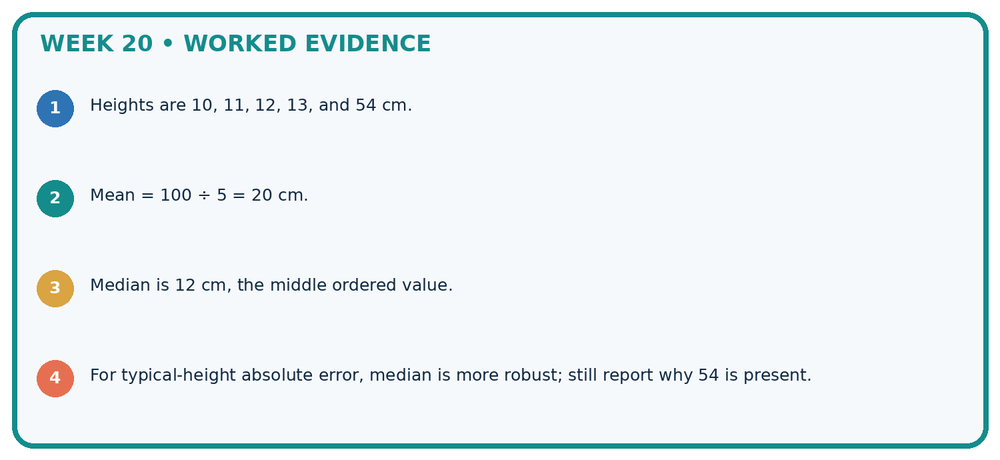
Step 1
STEP 1 Heights are 10, 11, 12, 13, and 54 cm.
Step 2
STEP 2 Mean = 100 ÷ 5 = 20 cm.
Step 3
STEP 3 Median is 12 cm, the middle ordered value.
Step 4
STEP 4 For typical-height absolute error, median is more robust; still report why 54 is present.
CHECK Verify the denominator, unit, split, class definition, and data version before interpreting a score.
Recalculate, retrace, or restate the evidence independently:
A closer explanation
Constant prediction baselines at a glance
Learn from the worked case
Cover the result before checking it. Say what is given, choose the procedure, and follow one step at a time. Then uncover the result and explain your first mismatch. Ask why a step is allowed, not only what number it produces.
A pictorial worked case: Mean, Median, and Baselines
Fit two constant height baselines and compare them on held-out examples.
The facts we will use
Supplied facts
Training heights [2, 4, 6, 20] cm. Evaluation heights [4, 10] cm. Fit constants only from training.
Supplied facts
All inputs and outcomes in this worked example are invented classroom data; no real model run is claimed.
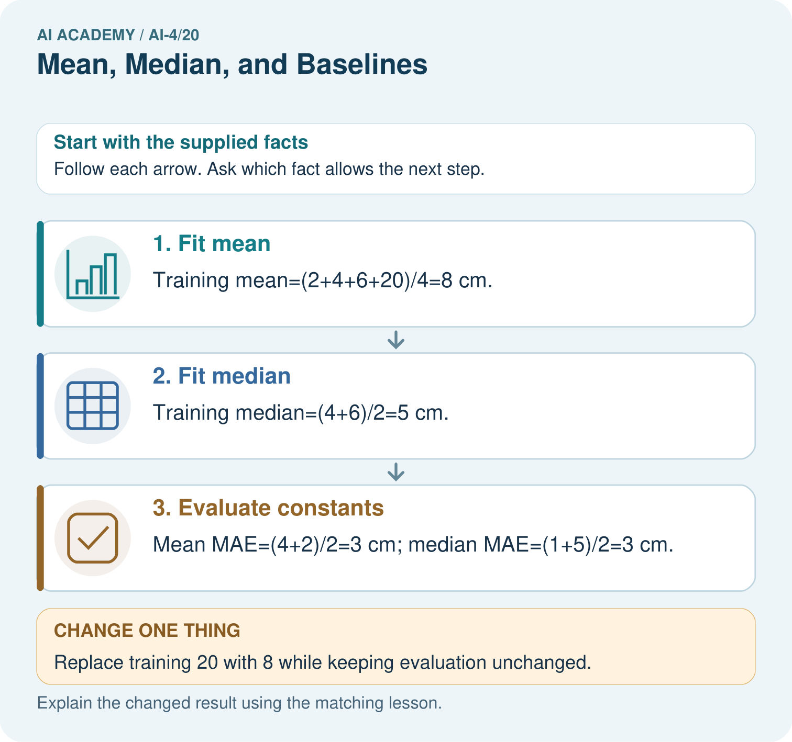
Read the picture one step at a time
Why this result follows
Why the result follows
Read the picture in order. Mean MAE=(4+2)/2=3 cm; median MAE=(1+5)/2=3 cm. The arrows show which recorded input or intermediate result each decision uses.
Explain the deciding step aloud before checking the changed case; pointing to the final answer alone does not show how it follows.
What this example does not establish
Keep the stated limit
Mean and median have different loss properties, but their held-out performance depends on the particular evaluation cases.
Keep the stated limit
Read the labelled picture: Does either original baseline win under evaluation MAE? Point to the relevant step in the picture, then write the changed result and the rule or evidence that supports it.
Keep the stated limit
Change one thing: Replace training 20 with 8 while keeping evaluation unchanged. Predict the result before checking the explanation. What remains the same?
Student lesson · 7 of 18
Find and repair a mistake
Find the unsupported step in the Mean, Median, and Baselines claim and explain a repair using the supplied evidence.
Find the first error
ERROR DETECTIVE
Compare → Diagnose → Repair
Do not patch the answer. Find the earliest unsupported assumption, data problem, or experiment error.
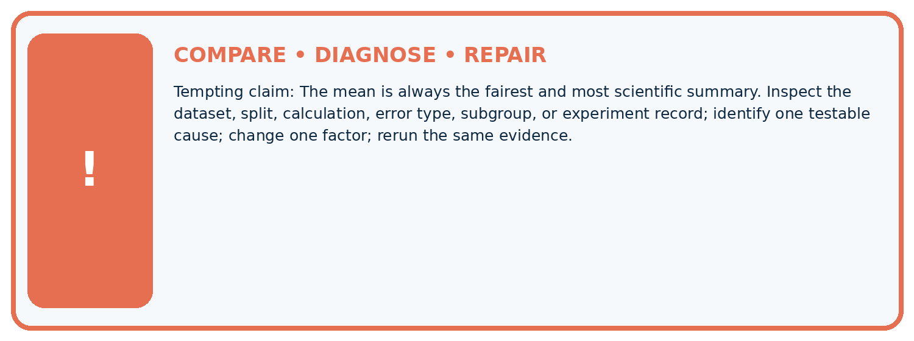
| Evidence record | Expected | Actual | Likely cause / next test |
|---|---|---|---|
| normal case | passes | ||
| boundary case | defined behavior | ||
| missing case | safe fallback | ||
| shifted case | measured limit |
CLAIM TO CHALLENGE The mean is always the fairest and most scientific summary.
Diagnose one cause and name the cleanest next experiment:
A closer explanation
For an even number of values, this course averages the two middle values to report one median. Keep a frozen baseline across comparisons and show its evaluation score.
A model that fails to beat it may still reveal a data or metric issue worth investigating.
Student lesson · 8 of 18
Practise together
Practise Mean, Median, and Baselines with support, then explain the deciding step in your own words.
ML STUDIO
Specify Before You Run
A trustworthy result can be reproduced from the recorded data, code, settings, and evaluation rule.

Experiment record
Question to explain
QUESTION + intended use + success threshold
DATA version + grouped split + leakage check
CODE/preprocessing + features + model + settings + seed
METRICS + positive class + units + denominators
PREDICTIONS + errors + subgroup slices + limitations
HUMAN reviewer + release, revise, limit, or stop decision
Write the minimum record needed to reproduce today's result:
A closer explanation
Replacing training 12 by 40 gives mean 13 and median 5. That change is a data change to record and investigate, not an instruction to delete an inconvenient observation.
Decide whether the extreme value is valid using the measurement policy and provenance.
Practise with less help: Score separately
Use workbook W2 for the connected example “Constant prediction baselines”. First fill the input and rule boxes. Try the middle steps before asking for a hint. After a hint, try the next step yourself.
| Plan | Do | Check |
|---|---|---|
| What is given? Which rule or procedure applies? | Record each intermediate step. | Does the result follow? What remains unknown? |
Explain your trace to a partner. Your partner points to one step to check. Swap roles on the next case. Each person writes their own explanation.
Check your reasoning
Use the worked case for Constant prediction baselines. Proposed explanation: “A final answer is enough”. Decide whether this explanation is supported.
Point to the step or supplied fact that decides; explain your repair if needed.
Answer on your own before discussion. If you are unsure, say which step you need help with.
Explain the picture
Does either original baseline win under evaluation MAE? Point to the relevant step in the picture, then write the changed result and the rule or evidence that supports it.
This is supported practice. Keep the separately named independent case for an attempt before feedback.
Student lesson · 9 of 18
Run the investigation
Investigate Mean, Median, and Baselines. Record the prediction, actual observation or labelled paper trace, explanation and next test separately.
EVIDENCE LAB
Predict → Run → Calculate → Interpret
Keep the test conditions fixed, record every result, and change only one planned factor.
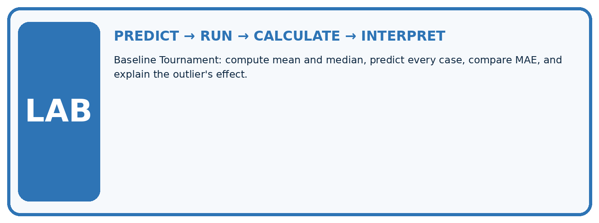
1. Write the hypothesis and expected evidence before running.
2. Baseline Tournament: compute mean and median, predict every case, compare MAE, and explain the outlier's effect.
3. Run one normal, one boundary, one missing, and one shifted case.
4. Calculate the metric from raw counts or row-level errors.
5. Interpret what changed, what did not, and what remains unsafe or unknown.
| Case | Prediction | Actual | Calculation / evidence | Meaning / next test |
|---|---|---|---|---|
| Normal | ||||
| Boundary | ||||
| Missing | ||||
| Shifted |
Plan → try → check
Before trying: what do I expect, and why? While trying: which step could first go wrong? Afterwards: what did I actually observe, and what should change? Keep “not run” if you only traced the procedure.
Student lesson · 10 of 18
Build your understanding
Move from recall to tracing, diagnosis and transfer in Mean, Median, and Baselines. Explain why each step is justified.
MASTERY
From Knowing the Word to Owning the Idea
Move upward only when you can produce evidence without copying the example.

DEFINE Use all four terms precisely: mean, median, outlier, location baseline.
CALCULATE Reproduce the worked evidence with units and denominator.
TRACE Explain the data, code or decision path.
DIAGNOSE The mean is always the fairest and most scientific summary.
TRANSFER Solve a fresh dataset or model case.
IMPROVE Change one cause and rerun fixed evidence.
DEFEND State intended use, metric, limitation, and human responsibility.
MASTERY RULE A coached calculation becomes mastery only after a different case is completed independently.
Student lesson · 11 of 18
Connect your project
Apply this week’s idea to Responsible Plant Classifier. Keep an annotated decision and the evidence supporting it.
CUMULATIVE PROJECT
Responsible Plant Classifier
Every week adds one reviewable artifact to the same evidence-based capstone.
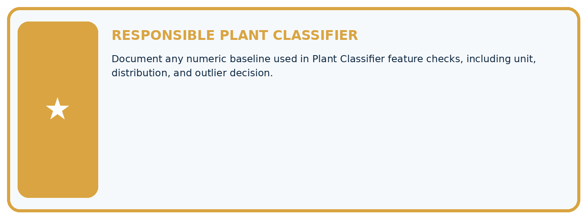
THIS WEEK'S CHECKPOINT Document any numeric baseline used in Plant Classifier feature checks, including unit, distribution, and outlier decision.
Which requirement or risk does this artifact address?
Which dataset, split, code, and metric version does it use?
What normal and shifted cases were tested?
What remains uncertain or weak?
What decision still belongs to a teacher or qualified human?
RESPONSIBLE RELEASE Never use this classroom prototype for medical, pesticide, agricultural, or other consequential decisions.
My evidence-linked project decision:
Evidence for your project
For your Responsible Plant Classifier, save the input, procedure, observed result and limitation of this check.
Label this worked example as practice; use a different, previously unreviewed case when checking independent understanding.
Student lesson · 12 of 18
Show what you know
Use a genuinely new case for independent evidence. Previously discussed examples remain practice; use the separately named independent case before feedback.
INDEPENDENT PROOF
Explain • Calculate • Transfer • Defend
Complete this with a fresh case after guided practice and compare it with the mastery criteria.
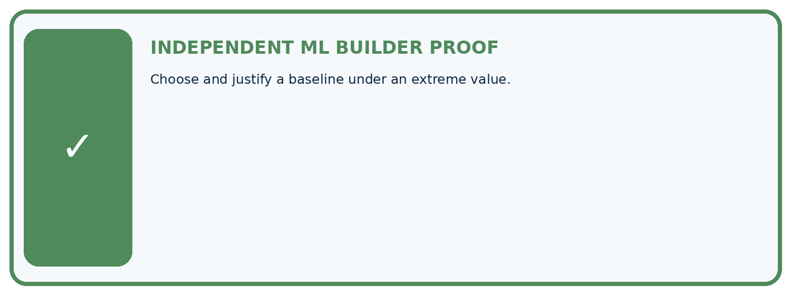
What success looks like
REQUIRED PROOF Choose and justify a baseline under an extreme value.
□ Define the task, feature/target roles, and intended-use boundary.
□ Show the calculation, code trace, or experiment record.
□ Test a normal case and one revealing boundary, missing, or shifted case.
□ Diagnose one failure without changing several factors at once.
□ Name a limitation, fairness concern, and the human-review action.
Independent evidence and defense:
My level: □ Not yet □ With one hint □ Independently □ I can teach and defend it
Connect to the next lesson
NEXT BRIDGE Carry the experiment evidence into: Absolute Error and MAE.
Student lesson · 13 of 18
Study a complete case
Revisit the complete Mean, Median, and Baselines case for supported practice. Repeated examples do not become fresh assessments.
Week 20 Worked case
Use the supplied details to practise the weekly concept before attempting the independent question. This case extends the illustrated lesson.
The situation
Training heights are 2,4,12 cm. Compare constant mean and median baselines.
The question
Compute both and training absolute errors.
Worked explanation
Mean=6, median=4. Mean errors 4,2,6 total12; median errors 2,0,8 total10. Median minimises absolute error here.
Explain it in your own words
Which detail supports the answer, and why does it matter?
Trace the supplied case visually
Mean and median baselines use the same observations
| Evidence or stage | Value or result |
|---|---|
| Observation A | 2 |
| Observation B | 4 |
| Observation C | 12 |
| Mean baseline | 6 |
| Median baseline | 4 |
Training heights are 2,4,12 cm. Compare constant mean and median baselines.
Compute both and training absolute errors.
Mean=6, median=4. Mean errors 4,2,6 total12; median errors 2,0,8 total10. Median minimises absolute error here.
Student lesson · 14 of 18
Try a new case independently
Attempt the reserved new case before feedback. Record support; the earlier examples below remain additional practice.
Independent case: Apply independently
Training [1, 3, 5, 15], evaluation [3, 9]. Fit both constants and calculate MAE.
Attempt this case before feedback. Record any help. Earlier examples below are further practice; a case already practised with feedback cannot establish fresh transfer.
Week 20 Independent application
Close the worked explanation. Apply the idea to this different question without copying.
For training heights 2, 3 and 10 cm, calculate mean and median. Which constant is less influenced by the high value?
My answer, with a trace, calculation or supporting evidence
Create and test
Change one relevant detail. Predict the result before testing. Include a boundary or missing-information case when it helps reveal a limit.
My changed input and expected result
Connect to your project
Document any numeric baseline used in Plant Classifier feature checks, including unit, distribution, and outlier decision.
The evidence I will keep
Your teacher has the independent answer and scoring criteria. Complete the matching workbook week to keep your practice evidence together.
Transfer practice from the original programme
For training targets [1,3,11], compute mean and median constant baselines. Compare total absolute training error for each. Where must final performance be measured?
Use feedback to improve
Attempt the independent case before hints. Record whether you worked alone, used a hint or followed a model. After feedback, fix the first unsupported step and explain why it changed.
A later check uses a changed case, not a copied answer.
Student lesson · 15 of 18
Your lesson route
Use this map to navigate Mean, Median, and Baselines, connect the goals to tasks and keep one evidence record for each attempt.
Start with this question: Fit two constant height baselines and compare them on held-out examples.
| By the end, I can | How I will show it |
|---|---|
| Fit mean and median constant baselines on training targets | Explain the deciding step, show a trace or test, and state one limit. |
| Compare constant predictions on separate records | Explain the deciding step, show a trace or test, and state one limit. |
| Keep fitted constants independent of evaluation answers | Explain the deciding step, show a trace or test, and state one limit. |
Remember → watch and explain → try with help → investigate → try independently → keep project evidence. Your teacher may spread this lesson across several classes.
Keep your first prediction. Compare it with what the evidence shows and explain any change.
Student lesson · 16 of 18
Finish and return
Explain Mean, Median, and Baselines without notes, identify a remaining question and plan a later check with a changed case.
Close your notes. Explain this goal in your own words: Fit mean and median constant baselines on training targets
If you are unsure, return to the worked picture and explain one arrow. If you are ready, change an input or assumption and justify your prediction.
Save your workbook evidence. At the next review, try a different case before opening your old answer.
Student lesson · 17 of 18
Supported practice, repair and portfolio
Attempt supported questions before using hints or feedback. Review a missing building block, then keep the completed work.
Use this supported practice once, in the browser or on paper. Keep the reserved independent assessment for a separate first attempt before teacher feedback.
Fit two constant height baselines and compare them on held-out examples.
Practice 1: explain the deciding evidence
Which labelled step matches this detail? Mean MAE=(4+2)/2=3 cm; median MAE=(1+5)/2=3 cm.
1. Fit mean
2. Fit median
3. Evaluate constants
Hint · try first
Hint if needed: Read the steps in the pictorial case. Match the supplied detail to the stage that performs or records it.
Feedback · compare after trying
After your attempt, compare with the supported explanation: Evaluate constants Mean MAE=(4+2)/2=3 cm; median MAE=(1+5)/2=3 cm. Read the picture in order. Mean MAE=(4+2)/2=3 cm; median MAE=(1+5)/2=3 cm.
The arrows show which recorded input or intermediate result each decision uses. Explain the deciding step aloud before checking the changed case; pointing to the final answer alone does not show how it follows.
Practice 2: explain the deciding evidence
Changed case · predict first
Changed-case practice: Replace training 20 with 8 while keeping evaluation unchanged. Which conclusion is supported by the supplied facts?
1. Both fitted constants become5 cm and both evaluation MAEs remain3 cm.
2. This one example guarantees correct results for every future input.
3. We can decide the result without examining the changed input or the procedure.
Hint · try first
Hint if needed: Use the changed condition and the deciding step in the pictorial trace. The answer must say what follows from those facts.
Feedback · compare after trying
After your attempt, compare with the supported explanation: Both fitted constants become5 cm and both evaluation MAEs remain3 cm. Mean is now20/4=5; median stays5. The earlier training outlier affected the mean.
Repair a missing building block
Review Regression and Residuals (ai-4/19). Goal: Distinguish numeric prediction from classification. Short practice: Which statistic reveals the size of errors without cancellation?
Point to the relevant step in the picture, then write the changed result and the rule or evidence that supports it.. Return to this week and explain what you changed.
Review Precision and Recall (ai-4/17). Goal: Choose the denominator that answers the question. Short practice: Were the original precision and recall denominators the same?
Point to the relevant step in the picture, then write the changed result and the rule or evidence that supports it.. Return to this week and explain what you changed.
Review Scores and Calibration Intuition (ai-4/14). Goal: Interpret calibration using groups of forecasts. Short practice: Does a calibrated 0.8 score mean every such leaf is spotted?
Point to the relevant step in the picture, then write the changed result and the rule or evidence that supports it.. Return to this week and explain what you changed.
Predict, run and debug
The browser lab lets you edit the supported Python examples already included in this lesson. Predict first, run, inspect the actual output or error, change one input, then run again.
Keep code, predictions, actual results and a reasoned revision together. On paper, label your result as a trace rather than an execution.
Keep your completed work
Use Download completed work in the hosted lesson to export your answers, reflections, practice feedback and code-run evidence. Open the HTML copy to read or print it.
Drafts stay in this browser when storage is available; clear drafts on a shared device.
Student lesson · 18 of 18
Visual concept journey
Explain each Mean, Median, and Baselines graphic using its labels, deciding evidence and relevant limitation.
01. Mean, Median, and Baselines: the case
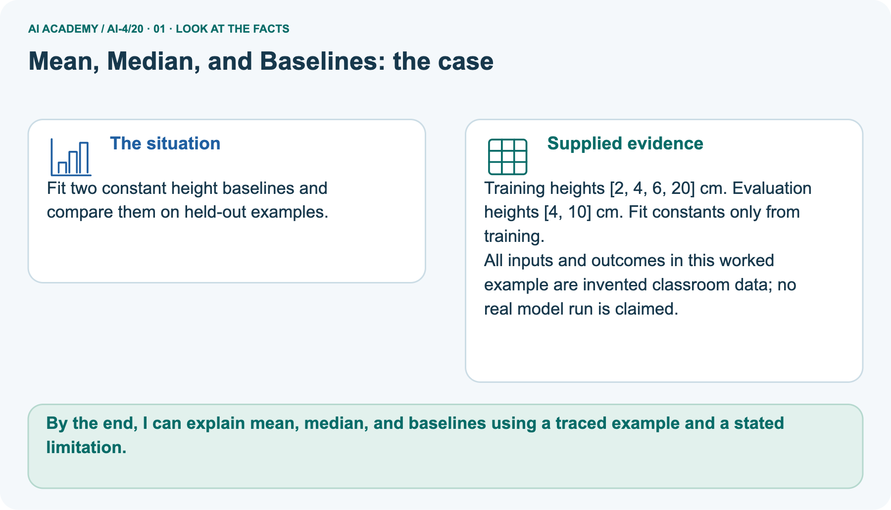
Fit two constant height baselines and compare them on held-out examples. Supplied facts: Training heights [2, 4, 6, 20] cm. Evaluation heights [4, 10] cm. Fit constants only from training.
All inputs and outcomes in this worked example are invented classroom data; no real model run is claimed.
Point to the given fact that matters most. Explain why it matters.
02. Follow the deciding steps

Fit mean: Training mean=(2+4+6+20)/4=8 cm. → Fit median: Training median=(4+6)/2=5 cm. → Evaluate constants: Mean MAE=(4+2)/2=3 cm; median MAE=(1+5)/2=3 cm.
Point to each numbered stage and explain which recorded input it uses.
03. Constant prediction baselines at a glance
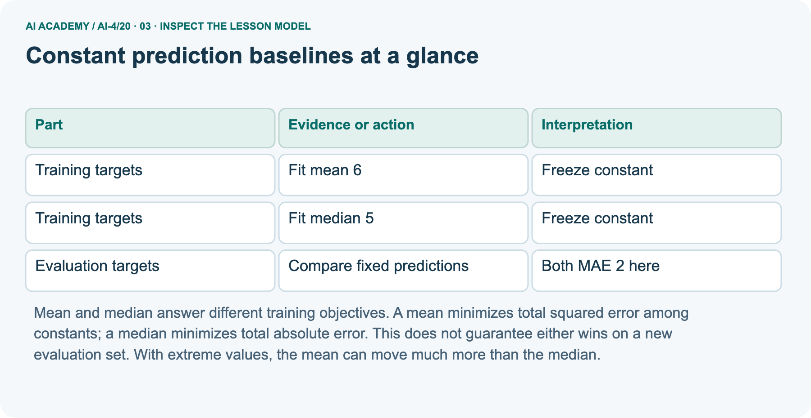
Constant prediction baselines at a glance. Training targets | Fit mean 6 | Freeze constant. Training targets | Fit median 5 | Freeze constant. Evaluation targets | Compare fixed predictions | Both MAE 2 here
Read the labels and values. Explain the relationship the model shows.
04. Change one thing. Trace what follows.
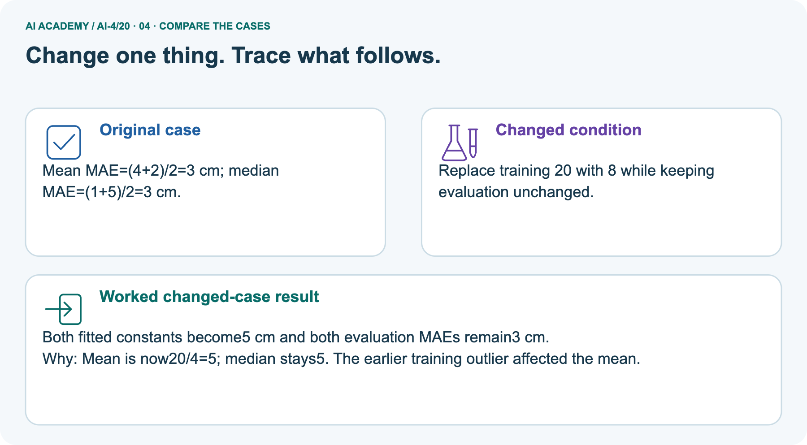
Original case: Mean MAE=(4+2)/2=3 cm; median MAE=(1+5)/2=3 cm. Changed condition: Replace training 20 with 8 while keeping evaluation unchanged.
Expected result: Both fitted constants become5 cm and both evaluation MAEs remain3 cm. Reason: Mean is now20/4=5; median stays5. The earlier training outlier affected the mean.
Predict before checking the worked changed-case result. Name what changed and what the supplied facts allow you to conclude.
05. Connect the explanation to its limit
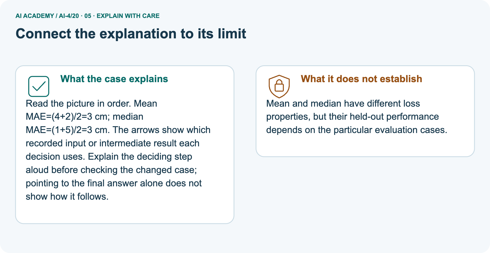
Read the picture in order. Mean MAE=(4+2)/2=3 cm; median MAE=(1+5)/2=3 cm. The arrows show which recorded input or intermediate result each decision uses.
Explain the deciding step aloud before checking the changed case; pointing to the final answer alone does not show how it follows.
Limit: Mean and median have different loss properties, but their held-out performance depends on the particular evaluation cases.
Explain the case, then point to a limit on the claim.
06. Make the idea visible in your project
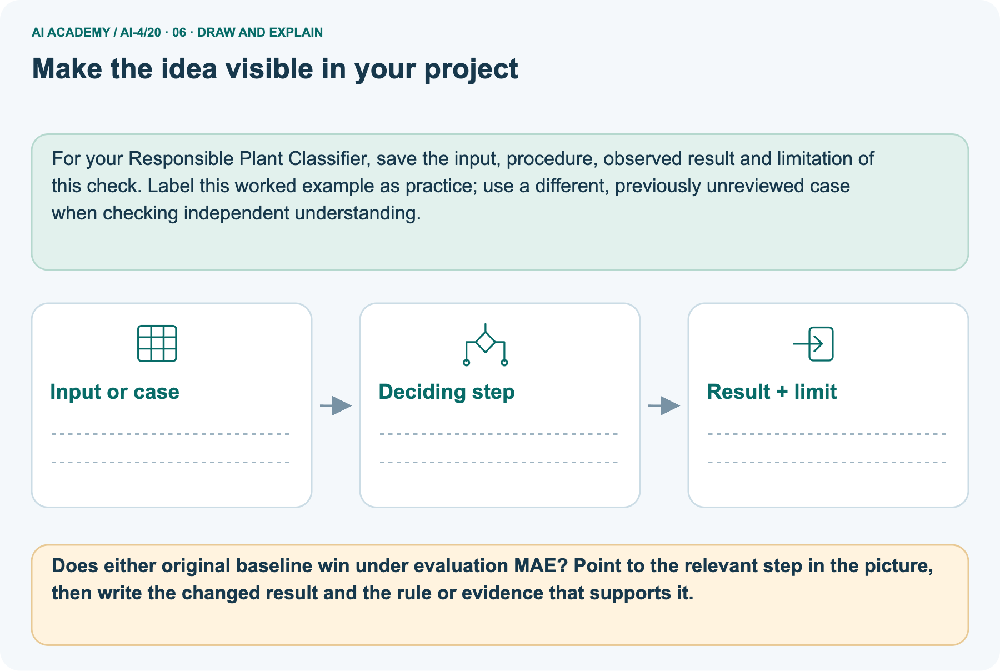
For your Responsible Plant Classifier, save the input, procedure, observed result and limitation of this check.
Label this worked example as practice; use a different, previously unreviewed case when checking independent understanding. Draw your input, deciding step, result and limit.
Supported question: Does either original baseline win under evaluation MAE? Point to the relevant step in the picture, then write the changed result and the rule or evidence that supports it.
Draw your project trace and justify the deciding step using evidence.